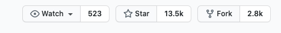

背景
- h5和native 交互代码冗余 不清晰 多人开发时效率地下
目的
- 为了寻找更高效的编程开发方式，节省代码量，以及多人开发的效率
过程探索
JavaScriptCore
- 官方解释
The JavaScriptCore Framework provides the ability to evaluate JavaScript programs from within Swift, Objective-C, and C-based apps. You can use also use JavaScriptCore to insert custom objects to the JavaScript environment.
JavaScriptCore框架提供了从Swift、Objective-C和基于c的应用程序中评估JavaScript程序的能力。您还可以使用JavaScriptCore将定制对象插入到JavaScript环境中。
苹果爸爸在iOS7.0以后推出的官方库，目前看起来是适用于UIWebView(官方以不推荐使用)
- 官方解释
下面说一下使用方法
关键词： JSContext JSValue JSExport
- JSExport
继承并申明你需要到protocol - 注入到JS里到function
1 | @objc protocol SwiftJavaScriptProtocol: JSExport { |
申明一个继承于NSObjectt的class, 并实现你的protocol
1 | class SwiftJavaScriptModel: NSObject, SwiftJavaScriptProtocol { |
最后，通过UIWebView的特性，获取JSContext,并将我们的function注入到上下文
1 | extension JSCoreVC: UIWebViewDelegate { |
WebViewJavascriptBridge注意，这里注入的名字即是JS调用的名字，JS调用我们的函数和自己的使用方式一样,举例如下
1 | <div class="btn-block" onclick="WebViewJavascriptBridge.test('this is toast')"> |
看起来很方便吧，app -> JS 也很方便
1 | let context = JSContext() |
WKWebView
- 官方解释
You can make POST requests with httpBody content in a WKWebView.
After creating a new WKWebView object using the init(frame:configuration:) method, you need to load the web content. Use the loadHTMLString(:baseURL:) method to begin loading local HTML files or the load(:) method to begin loading web content. Use the stopLoading() method to stop loading, and the isLoading property to find out if a web view is in the process of loading. Set the delegate property to an object conforming to the WKUIDelegate protocol to track the loading of web content. See Listing 1 for an example of creating a WKWebView programmatically.
你可以在WKWebView中用httpBody内容发出POST请求。
在使用init(frame:configuration:)方法创建一个新的WKWebView对象之后，您需要加载web内容。使用loadHTMLString(:baseURL:)方法开始加载本地HTML文件，或使用load(:)方法开始加载web内容。使用stopLoading()方法停止加载，使用isLoading属性查明web view是否在加载过程中。将委托属性设置为符合WKUIDelegate协议的对象，以跟踪web内容的加载。清单1给出了以编程方式创建WKWebView的示例。
WKWebView关键词
WKUIDelegate WKNavigationDelegate WKScriptMessageHandler
1 | /* |
WKUIDelegate 基于JS系统的几个内部方法 实现一下方法要调用对应的completionHandler，否则崩溃
1 | func webView(_ webView: WKWebView, runJavaScriptAlertPanelWithMessage message: String, initiatedByFrame frame: WKFrameInfo, completionHandler: @escaping () -> Void) { |
WKScriptMessageHandler 重点来了，这是苹果爸爸推荐使用的JS交互
1 | let content = WKUserContentController() |
- 这里往content里注入的是JS调用APP的函数
JS通过window.webkit.messageHandlers.artproFunc.postMessage()给artproFunc发送消息
我们的解析在此方法里
1 | func userContentController(_ userContentController: WKUserContentController, didReceive message: WKScriptMessage) { |
以artpro为例，我们是将 artproFunc当作了一个通道，所有的function都走message.body分发出来，所以会有switch case 解析 body中的method，然后再进行不同的方法分发。
缺点
- 代码冗余
- 字符串分发，容易出错
- 函数格式各式各样，多人开发，他人不好接手
WebViewJavascriptBridge
最近研究JS和iOS native交互，偶然发现的库发现github上用的人也不少,感觉还不错的样子，就研究了下使用方法

看起来很简单的样子
1 | bridge = WebViewJavascriptBridge.init(webV) |
WebViewJavascriptBridge 原理将在下篇文章中剖析
参考文档1